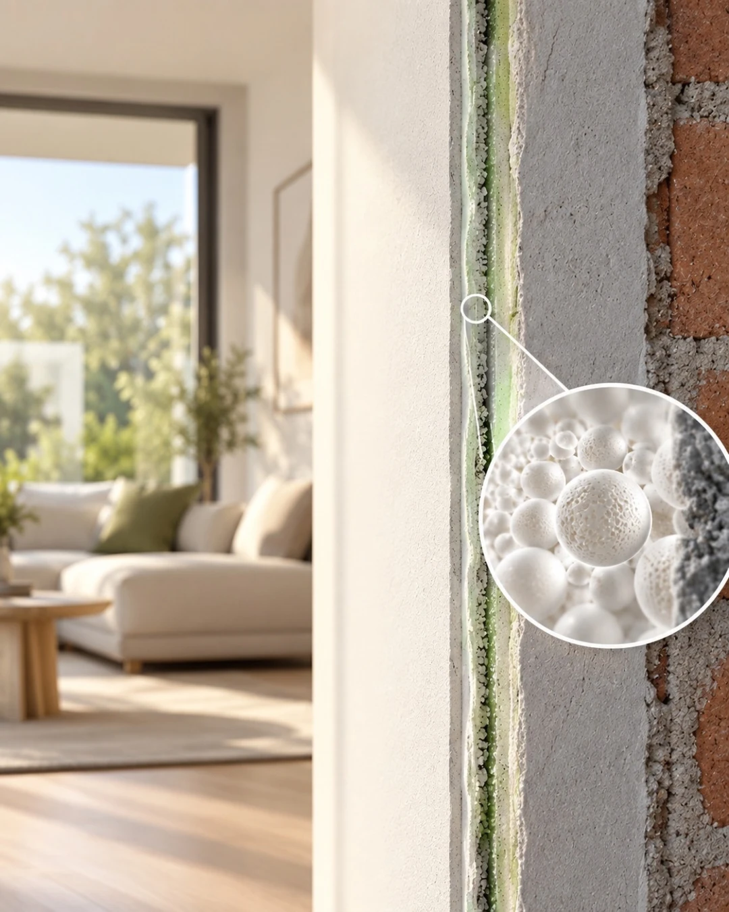

Ristrutturazione e trattamento termico interno a Roma
2 mm È tutto ciò che separa il freddo fuori dal caldo dentro.
Dentro quei 2 millimetri
Il trattamento contiene milioni di microsfere ceramiche cave. Funzionano come piccoli specchi: il caldo dei termosifoni resta nella stanza, l'afa d'estate resta fuori, e la parete smette di essere fredda al tatto.
Si applica direttamente sulle pareti interne durante la ristrutturazione, senza pannelli e senza spostare prese, battiscopa o radiatori.
Si comincia da casa tua
Veniamo a vedere gli ambienti da ristrutturare. Se vuoi sapere esattamente dove la casa perde calore, aggiungiamo l'analisi con termocamera.
Sopralluogo a domicilio
GratuitoUn tecnico viene da te, guarda pareti e ambienti, ascolta cosa vuoi rinnovare e ti consegna una proposta su misura.
- Valutazione di pareti, umidità e punti critici
- Consigli su lavori e colori
- Preventivo chiaro, senza impegno
Analisi con termocamera
Fotografiamo la temperatura delle pareti, stanza per stanza, per trovare dispersioni, ponti termici e zone a rischio di condensa e muffa.
Prova sulla termografia di esempio: muovi il cursore e leggi la temperatura del muro in quel punto.
- Mappa termica di ogni stanza
- Individuazione dei muri freddi
- Intervento progettato al millimetro

Cosa cambia nella tua casa
Caldo d'inverno, fresco d'estate
Il riscaldamento resta nelle stanze e l'afa estiva non entra: più comfort e meno consumi.
Niente più muffa
Sparisce il muro freddo: senza superfici fredde la condensa non si forma e la muffa non attecchisce.
Protezione dal fuoco
Il prodotto è ignifugo: una protezione in più per le pareti di casa.
Aria più sana
È altamente traspirante: le pareti respirano e gli ambienti restano salubri.
Completamente green
Atossico e rispettoso dell'ambiente, sicuro per bambini e animali.
Il trattamento è già la finitura
Si realizza nel colore che scegli, così le pareti sono pronte appena finito il lavoro: nessuna pittura da stendere dopo.
Consigliamo tinte chiare, che valorizzano la luce degli ambienti. Sul trattamento finito non va posato nient'altro: niente pittura, carta da parati o rivestimenti.
Un solo cantiere, dalla prima visita alla casa pulita
Ristrutturazione e trattamento delle pareti nello stesso intervento, con un cantiere ordinato dall'inizio alla fine.
Sopralluogo
Vediamo casa insieme e raccogliamo le tue esigenze di ristrutturazione.
GratuitoAnalisi termica
Con la termocamera mappiamo dispersioni e muri freddi, stanza per stanza.
Su richiestaLavori e trattamento
Proteggiamo pavimenti, infissi e arredi, ristrutturiamo e applichiamo i 2 mm sulle pareti nel colore scelto.
Pulizia e consegna
Rimuoviamo protezioni e residui, puliamo gli ambienti e ti riconsegniamo la casa pronta da vivere.
Domande frequenti
Non trovi la risposta? Chiamaci al 327 3019773.
Come fanno 2 mm a isolare una parete?
Per isolare non serve spessore, serve riflessione. Le microsfere ceramiche cave contenute nel prodotto respingono il calore invece di lasciarlo passare attraverso il muro.
D'inverno il caldo dei termosifoni resta nella stanza e d'estate l'afa resta fuori. La parete non è più fredda al tatto e gli ambienti si scaldano più in fretta.
Quanto dura il prodotto?
Il trattamento ha una durata minima di 25 anni. La ceramica delle microsfere è un materiale inorganico che non si degrada nel tempo.
È un prodotto tossico?
No. È un prodotto atossico a base acqua, senza odori fastidiosi: puoi viverci in sicurezza, anche con bambini e animali.
Oltre a riflettere il calore, cos'altro fa?
- Elimina il muro freddo, e con lui condense e muffe.
- Protegge dal fuoco: è un prodotto ignifugo.
- È altamente traspirante: lascia respirare le pareti e crea ambienti sani.
È un prodotto green?
Sì, è un prodotto completamente green, rispettoso dell'ambiente e di chi abita la casa. In più, trattenendo il calore, riduce i consumi di riscaldamento e raffrescamento.
Posso pitturare o mettere qualcosa sopra?
No: il trattamento è già la finitura finale e sopra non va posato nulla. In compenso si realizza in qualsiasi colore; consigliamo tinte chiare, che rendono gli ambienti più luminosi.
Prenota il sopralluogo gratuito
Lasciaci nome e telefono: ti richiamiamo per fissare l'appuntamento.